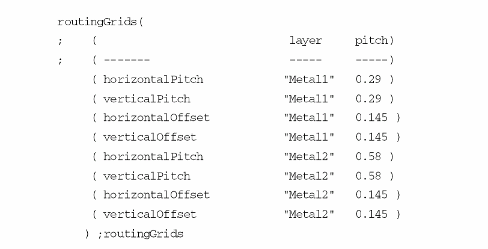
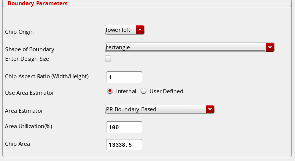
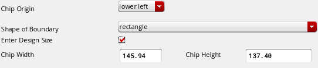

3
Reinitializing the Design
Reinitializing a Floorplan
The Floorplan – Reinitialize command makes a collection of design objects based on their cellType and places them around the design boundary. You can use the command to alter the state of different design objects simultaneously. By default, the Reinitialize command is run just after Generate Physical Hierarchy, however, it is not mandatory.
The Floorplan – Reinitialize command displays the Reinitialize Floorplan form shown in the graphic.
The form has the following three sections:
Initialization Options
The Initialization Options section includes the check boxes that you can use to reinitialize or retain the existing values of the various design objects.
- all: Select this option to reinitialize all the design objects.
- none: Select this option to deselect all the other options.
- Delete clusters: Select this option to delete all the existing clusters and its corresponding cluster boundaries in the design as a cluster boundary could not exist without the associated cluster.
- Delete cluster boundaries: Select this option to delete all the cluster boundaries in the design.
- Delete blockages: Select this option to delete all the blockages from the design. On selecting this option it activates the Preserve blockages option in the Preserve Objects section. You can use the Preserve blockages field to selectively preserve the placement, routing, halo, fill, pin, screen, slot and wiring blockages while deleting other blockages.
- Delete wires: Select this option to delete all existing geometric routes — vias and pathSegs. The geometric routes is basically the routing made by autorouter (Nanoroute, VCAR (IC6.1.8 only), VSR, or CSR) and with the Wire Editor with the option Segment in Route.
-
Delete rows: Select this option to delete existing rows in the design. An existing row can either be a standard row or a custom row.
(Advanced Node Layout EAD Only) Any existing row regions are also deleted. For more information about row regions, see Layout Support for Row Regions in Virtuoso Placer User Guide. - Delete shapes: Select this option to delete existing shapes in the design. On selecting this option it activates the Preserve shapes option in the Preserve Objects section. You can use the Preserve Objects section to selectively preserve circle, donut ellipse, path, polygon, and rectangle shapes while deleting other shapes.
- Delete boundaries: Select this option to delete snap and area boundaries in the design. Selecting this option activates the Preserve boundaries option in the Preserve Objects section. You can use the Preserve boundaries field to selectively preserve the area and snap boundaries.
- Delete fillers with prefix - Select this option to delete the filler instances in the design with the filler prefix name specified in the string field next to the Delete fillers with prefix option. However, if the filler prefix is not specified in the string filed and the Delete fillers with prefix option is selected, a warning message is displayed. Also, if the characters such as "*" , ".*", etc. are specified in the string field, all the physical only instances in the design are deleted and a warning is displayed.
-
Initialize grids: Select this option to initialize the grids in a design.
The grids are initialized in the following order:-
Detailed routing grid: Each detailed routing grid is defined by the following:
- Direction (horizontal or vertical)
- Routing layer
- Starting point
- Routing pitch or step
- Number of grid lines.
All the routing layer information is read from the following section of the technology file:Using these value and the design boundary, Floorplanner automatically calculates the starting point and the number of grid lines required to cover the entire design area.
If you do not define a value forpitch, the command uses a default value derived from the line-to-via spacing rule defined in the technology file, and displays a warning message.
If the routing offset is not defined for a routing layer in the technology file, then its value is considered by default as half of the routing pitch.
Floorplanner calculates the starting point of the routing grid on each layer by adding the routing offset to the left most coordinate of the bBox of the design boundary.
Floorplanner calculates the count (number of grids) from the step (routing pitch) and the bBox of the design boundary.
If the routing grid cannot be created because the required information is not specified in the technology file, then the routing grid is created by using the values of the manufacturing grid for that layer.
Routing grids in the non-preferred direction are created by using the pitch information. If a routing layer has horizontal as the preferred direction, then the grid in the non-preferred direction, which is vertical for the layer, is created by using the horizontal pitch. Similarly, if the preferred direction is vertical then the routing grid in the non-preferred direction, which is horizontal for the layer, is created by using the vertical pitch.
For example, consider the following entries in the routingGrids and routingDirections section in the technology file:routingDirections(
;( layer direction )
;( ----- --------- )
( Poly "none" )
( Metal1 "horizontal" )
( Metal2 "vertical" )
( Metal3 "horizontal" )
routingGrids(
; ( layer pitch)
; ( ------- ----- -----)
( horizontalPitch "Metal1" 0.29 )
( verticalPitch "Metal1" 0.29 )
( horizontalOffset "Metal1" 0.145 )
( verticalOffset "Metal1" 0.145 )
( horizontalPitch "Metal2" 0.58 )
( verticalPitch "Metal2" 0.58 )
( horizontalOffset "Metal2" 0.145 )
( verticalOffset "Metal2" 0.145 )
) ;routingGrids
In the above, the preferred direction for Metal1 is horizontal. For Metal1, grids in the non-preferred direction, which is vertical, are created by using the horizontal pitch for Metal1 (0.29).
Unlike in the above example, if the horizontal pitch for Metal1 is not specified in the technology file, then the grids in the non-preferred direction is created by using the horizontal pitch of Metal2 layer (0.58). -
Placement grid: The placement grid information does not come from the technology file. It is calculated from the detailed routing grid itself. A placement grid is defined by the following:
Placement grids always begin at (0.0 0.0), and have unique step value for horizontal direction and vertical direction.
The placement grid step is the same as the step for the parallel detailed routing grid on the lowest routing layer, i.e. step of horizontal placement grid is equal to the step of the detailed routing grid of the lowermost horizontal routing layer. Similarly step of vertical placement grid is equal to the step of the detailed routing grid of the lowermost vertical routing layer.
The distance between any two parallel placement grid and detailed routing grid lines is defined byoffset, a required property defined in the technology file. If you do not define a value for this property, by default the value is set to half the pitch for the detailed routing grid. -
Manufacturing grid: This grid gives the minimum possible resolution and is used for the placement of the analog blocks and their pins. All the grids are in multiples of manufacturing grid. The manufacturing grid value is read from the mfgGridResolutionSection section, which is a sub-section of the controls section in the technology file:
mfgGridResolution(( 0.001000 ))
;mfgGridResolution
So, the manufacturing grid step is equal to the mfgGridResolution value and the start point is the lower-left of the design boundary.
You must initialize grids before performing any action on a block. -
Detailed routing grid: Each detailed routing grid is defined by the following:
- Initialize chip size: Select this option to create a design boundary. On selecting this option, the Boundary Parameters section in the Reinitialize Floorplan form appears. You can create rectangle or rectilinear boundary using the options available in the Boundary Parameters section.When the design boundary gets initialized then the halo blockage associated with its prBoundary, if any, is deleted. Also, while initializing the design boundary, if the top level PR boundary is missing and Initialize chip size option is off, a warning message will be displayed.
-
Initialize instances: Select this option to move all unplaced and placed instances to a position outside the PR boundary without any overlaps. Their instance placement status is reset to none. This option does not move locked and fixed instances. The instances are moved to different quadrants depending on the type of the instance master (oaCellType). Use the CIW – Tools – Set Cell Type form to set the type for a big number of cells at the same time. You can also edit the Master Properties and change the cell type accordingly. The following rules describe the position of the various instance types:
- Standard cells are placed on the right boundary of the chip.
- I/Os are placed at the upper boundary of the chip.
- Macros are placed on the left boundary of the chip.
- Custom cells are placed at the lower boundary of the chip. If there are any chained custom cells in the design, reinitialization does not break the chaining between the custom cells. However, reinitialization does not create chained custom cells.
Selecting the Initialize instances option activates the Preserve pre-placed option in the Preserve Objects section that you can use to selectively preserve the placement of I/Os, Macros, Standard cells, and Custom cells. - Initialize pins: Select this option to move all the pins inside the PR boundary of the design and change the pin placement status to unplaced.
- Preserve figGroups: Enables you to preserve figGroups present in the design. Set this option to ON if you want to preserve the figGroups and the state of the figures associated with it.
( horizontalOffset "Metal2" 0.145 )
( verticalOffset "Metal2" 0.145 )
) ;routingGrids
In the above, the preferred direction for Metal1 is horizontal. For Metal1, grids in the non-preferred direction, which is vertical, are created by using the horizontal pitch for Metal1 (0.29).
Unlike in the above example, if the horizontal pitch for Metal1 is not specified in the technology file, then the grids in the non-preferred direction is created by using the horizontal pitch of Metal2 layer (0.58).
-
Placement grid: The placement grid information does not come from the technology file. It is calculated from the detailed routing grid itself. A placement grid is defined by the following:
Placement grids always begin at (0.0 0.0), and have unique step value for horizontal direction and vertical direction.
The placement grid step is the same as the step for the parallel detailed routing grid on the lowest routing layer, i.e. step of horizontal placement grid is equal to the step of the detailed routing grid of the lowermost horizontal routing layer. Similarly step of vertical placement grid is equal to the step of the detailed routing grid of the lowermost vertical routing layer.
The distance between any two parallel placement grid and detailed routing grid lines is defined byoffset, a required property defined in the technology file. If you do not define a value for this property, by default the value is set to half the pitch for the detailed routing grid. -
Manufacturing grid: This grid gives the minimum possible resolution and is used for the placement of the analog blocks and their pins. All the grids are in multiples of manufacturing grid. The manufacturing grid value is read from the mfgGridResolutionSection section, which is a sub-section of the controls section in the technology file:
mfgGridResolution(( 0.001000 ))
;mfgGridResolution
So, the manufacturing grid step is equal to the mfgGridResolution value and the start point is the lower-left of the design boundary.
-
Placement grid: The placement grid information does not come from the technology file. It is calculated from the detailed routing grid itself. A placement grid is defined by the following:
You must initialize grids before performing any action on a block.- Initialize chip size: Select this option to create a design boundary. On selecting this option, the Boundary Parameters section in the Reinitialize Floorplan form appears. You can create rectangle or rectilinear boundary using the options available in the Boundary Parameters section.When the design boundary gets initialized then the halo blockage associated with its prBoundary, if any, is deleted. Also, while initializing the design boundary, if the top level PR boundary is missing and Initialize chip size option is off, a warning message will be displayed.
- Initialize instances: Select this option to move all unplaced and placed instances to a position outside the PR boundary without any overlaps. Their instance placement status is reset to none. This option does not move locked and fixed instances. The instances are moved to different quadrants depending on the type of the instance master (oaCellType). Use the CIW – Tools – Set Cell Type form to set the type for a big number of cells at the same time. You can also edit the Master Properties and change the cell type accordingly. The following rules describe the position of the various instance types:
- Standard cells are placed on the right boundary of the chip.
- I/Os are placed at the upper boundary of the chip.
- Macros are placed on the left boundary of the chip.
- Custom cells are placed at the lower boundary of the chip. If there are any chained custom cells in the design, reinitialization does not break the chaining between the custom cells. However, reinitialization does not create chained custom cells.
Selecting the Initialize instances option activates the Preserve pre-placed option in the Preserve Objects section that you can use to selectively preserve the placement of I/Os, Macros, Standard cells, and Custom cells.- Initialize pins: Select this option to move all the pins inside the PR boundary of the design and change the pin placement status to unplaced.
- Preserve figGroups: Enables you to preserve figGroups present in the design. Set this option to ON if you want to preserve the figGroups and the state of the figures associated with it.
Preserve Objects
The Preserve Objects section has the following options:
- Preserve pre-placed: This option enables you to selectively preserve the locations of the pre-placed I/Os, macros, standard cells, and custom cells.
- Preserve pre-placed: This option enables you to selectively preserve the location of pre-placed pins, fixed pins, and locked pins. By default, fixed and locked pins are preserved.
- Preserve blockages: This option enables you to selectively preserve the Placement, Routing, Halo, Feedthru, Fill, Pin, Screen, and Slot blockages.
- Preserve shapes: This option enables you to selectively preserve the Circle, Donut, Ellipse, Path, Polygon, and/or Rectangle shapes.
- Preserve boundaries: This option enables you to selectively preserve the Area and/or Snap boundaries in a design.
Boundary Parameters
The Boundary Parameters section has the following options:
- Chip Origin: Select this option to specify the point of origin of the bounding box of the rectangle’s boundary as lower left or center. The default value is lower left. If there is no PR boundary, by default, the PR boundary will be created with the lower left of the PR boundary at the origin.
-
Shape of Boundary: Select this option to specify the boundary as rectangle or polygon. By default, the shape of the boundary is rectangle and the form appears as shown in the graphic.
The final coordinates of the new rectangle design boundary depend on the value of Chip Origin. If you specify Chip Origin as lower left, then the lower left of the bounding box of the rectangle’s boundary should be at (0.0, 0.0). If you specify it as center, then the center of the bounding box of the rectangle boundary should be at (0.0, 0.0).
You can create a rectangular design boundary by:- Explicitly specifying the width and height of the boundary.
- Automatically calculate the width and height using desired aspect ratio (width/height) and estimated required area by the boundary.
The following fields are available when the value of Shape of Boundary field is rectangle: -
Enter Design Size: Select the Enter Design Size option to specify the width and height of the rectangle. On selecting the Enter Design Size option the Chip Width and Chip Height fields are enabled.
You use the Chip Width and the Chip Height fields to specify the width and the height of the rectangle. - Chip Aspect Ratio (Width/Height): Use this field to specify the width-to-height ratio for the chip. The default value is 1.0. This option is available only when Enter Design Size is deselected.
- Use Area Estimator: You can specify the area estimator that you want to use.
- Area Estimator: Select the area estimator you want to use to estimate the area required by the chip. For more information, see Area Estimation Framework.
- Chip Area: This field displays the value of the area calculated by the area estimator. You can manually specify the area in this field. The value of this field will be used to calculate the final chip width and height.
You can also create a rectilinear design boundary by selecting Polygon in the Shape of Boundary field. The Boundary Parameters section changes as shown in the graphic.
To create a rectilinear polygon, specify the vertices of rectilinear polygon in the Points (x1 y1) (x2 y2)... field and click OK.
Use the following rules to enter the co-ordinates (points):
-
Specify the points as (x1 y1) (x2 y2)... or ((x1 y1) (x2 y2)).
Example1: (0 0) (0 100) (100 100) (100 50) (50 50) (50 0)
Example 2: ((0 0) (0 100) (100 100) (100 50) (50 50) (50 0)) -
Points should be rectilinear.
Example: (0 0) (0 100) (100 100)....
Non example: (0 0) (0 100) (100 150).... -
Points should be continuous.
Example: (0 0) (0 100) (100 100).....
Non example: (0 0) (100 100) (0 100).....
Return to top